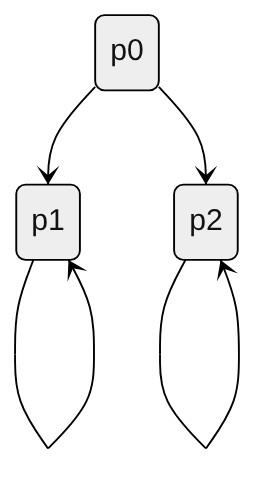
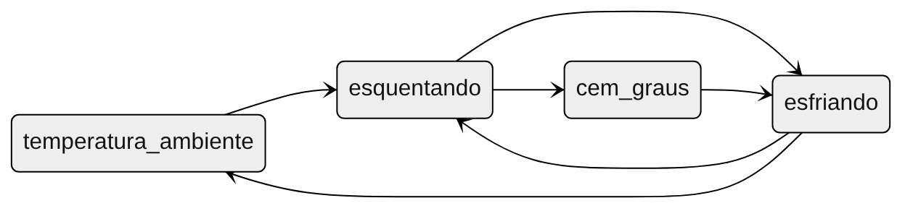

Checando propriedades com Lógica Temporal
SlidesTable of Contents
- 1. Model checking
- 1.1. Contexto
- 1.2. Interface de um model checker
- 1.3. Vantagens e Desvantagens
- 1.4. \faProjectDiagram Modelos
- 1.5. \faNotEqual Propriedades - \faClock Lógica temporal
- 1.6. \faNotEqual Propriedades - \faCircle Invariantes
- 1.7. \faRoute Contra-exemplo
- 1.8. \faUserGraduate Exercício: Qual dessas fórmulas pode ser um invariante?
- 2. Lógica Temporal
- 3. LTL
- 4. CTL
- 5. Verificando propriedades
1. Model checking
1.1. Contexto
- Problema: É difícil pensar em todos os cenários, principalmente em sistemas concorrentes/distribuídos
- Solução: Diferentes níveis de verificação
- \faDice Fuzzing e simulação
- \faLaptop Model checking
- \faUserEdit Provas (com assistente de provas)
- \faDice Fuzzing e simulação
1.2. Interface de um model checker
Como um model checker é usado?
- Duas entradas:
- \faProjectDiagram Um modelo - uma máquina de estado finita*
- \faNotEqual Uma propriedade - uma fórmula de alguma lógica temporal
- \faProjectDiagram Um modelo - uma máquina de estado finita*
- Três possíveis saídas
- \faThumbsUp Sucesso
- \faThumbsDown Contra-exemplo: Uma sequência de estados que viola a propriedade
- \faHandLizard Não há memória suficiente
Opcionalmente, também pode detectar deadlocks.
- Deadlock: o modelo não obedece a restrição de uma estrutura de Kripke, ou seja, existe um estado sem transição alguma saindo dele.
- \faThumbsUp Sucesso
1.3. Vantagens e Desvantagens
Vantagens
- \faRoute Contra-exemplos
- \faTasks Verificação parcial
- \faLaptop Processo automatizado
- \faSync Sequências infinitas de estados
Desvantagens
- \faBomb Explosão de estados
- \faSearch Não permite generalização (i.e. \(N\) processos)
- \faBug Model checkers em si não são verificados
No geral, é um método bom para encontrar falhas em software, que permite a verificação com certas restrições.
Comparado a testes e simulações aleatórias, pode ser mais eficiente em encontrar casos de borda onde falhas ocorrem.
1.4. \faProjectDiagram Modelos
Linguagens de especificação fornecem diferentes abstrações para como definir uma máquina de estados. Exemplos: Redes de Petri, TLA+ (Temporal Logic of Actions+), CSP (Communicating Sequential Processes), Alloy, entre outras.
1.5. \faNotEqual Propriedades - \faClock Lógica temporal
Dois operadores temporais principais:
- Eventualmente (\(\Diamond\)) ou Finalmente (\(F\)): Cada semáforo deve eventualmente ficar verde
- Sempre (\(\square\)) ou (\(A\)): O número do próximo estado é sempre maior que o número no estado anterior
Fórmulas de lógica temporal são sobre um comportamento (execução) do sistema modelado.
1.6. \faNotEqual Propriedades - \faCircle Invariantes
Invariantes são predicados sobre estados individuais do sistema. Um invariante é satisfeito se e somente se ele é verdadeiro para todos os estados do sistema.
Invariantes Indutivos são tipos especiais de invariantes que podem ser provados com indução matemática, isso é, sem necessidade de explorar todos os estados.
- Muito poderosos mas também difíceis de se definir
1.7. \faRoute Contra-exemplo
Entradas:
- \faProjectDiagram Modelo: 2 semáforos sem controle de revezamento
- \faNotEqual Propriedade: para cada semáforo, ele deve eventualmente ficar verde
Execução do model checker
Saída - \faRoute Contra-exemplo:
- Semáforo 1 inicia vermelho, semáforo 2 inicia vermelho
- Semáforo 1 fica verde (e semáforo 2 permanece vermelho)
- Semáforo 1 fica amarelo (e semáforo 2 permanece vermelho)
- Retorna ao estado (1)
Ótimo artefato para reprodução de bugs e geração de testes automatizados.
1.8. \faUserGraduate Exercício: Qual dessas fórmulas pode ser um invariante?
- Ao fazer uma transferência bancária, eu acabo com menos dinheiro do que tinha antes
- Ao ligar uma chaleira elétrica, ela eventualmente chegará a 100 graus
- Em um jogo da velha, a diferença entre o número de X e O não é maior do que 1
\faLightbulb Dica: Um invariante é uma fórmula a ser avaliada em cada estado do sistema.
Resposta: 3
2. Lógica Temporal
2.1. Operadores Temporais - Unários
- \(\square\) ou G: Globally, sempre.
- G \(\phi\): \(\phi\) deve ser verdadeiro por toda a execução a partir de agora.
- Exemplo: Comida sacia a fome
- G \(\phi\): \(\phi\) deve ser verdadeiro por toda a execução a partir de agora.
- \(\Diamond\) ou F: Finally, eventualmente, no Futuro.
- F \(\phi\): eventualmente (na execução a partir de agora), \(\phi\) deve ser verdadeiro.
- Exemplo: Eventualmente, terei fome
- F \(\phi\): eventualmente (na execução a partir de agora), \(\phi\) deve ser verdadeiro.
- \(\bigcirc\) ou X: Ne(x)t, próximo.
- X \(\phi\): \(\phi\) deve ser verdadeiro no próximo estado.
- Exemplo: Logo após comer, tenho sede
- X \(\phi\): \(\phi\) deve ser verdadeiro no próximo estado.
2.2. Operadores Temporais - Binários
- U: Until, até.
- \(\psi\) U \(\phi\): \(\psi\) deve ser verdade até que \(\phi\) seja verdade, sendo que \(\phi\) deve ser verdade no presente ou no futuro.
- Exemplo: Eu tenho fome até eu comer alguma coisa
- \(\psi\) U \(\phi\): \(\psi\) deve ser verdade até que \(\phi\) seja verdade, sendo que \(\phi\) deve ser verdade no presente ou no futuro.
- R: Release, libera.
- \(\psi\) R \(\phi\): \(\phi\) deve ser verdade até e incluindo o momento que \(\psi\) se torna verdadeiro. Se \(\psi\) nunca ficar verdadeiro, \(\phi\) deve permanecer verdadeiro para sempre.
- Exemplo: Ao comer chocolate, deixo de ter vontade de comer doce. Detalhe: Eu posso continuar com vontade de comer e acabar nunca comendo chocolate.
- \(\psi\) R \(\phi\): \(\phi\) deve ser verdade até e incluindo o momento que \(\psi\) se torna verdadeiro. Se \(\psi\) nunca ficar verdadeiro, \(\phi\) deve permanecer verdadeiro para sempre.
2.3. LTL e CTL
- LTL - Linear Temporal Logic (Lógica Temporal Linear). Em LTL, as fórmulas são implicitamente universalmente quantificadas. Propriedades que falam sobre a existência de uma execução não podem ser expressadas.
- CTL - Computational Tree Logic (Lógica de Árvore Computacional). CTL é uma lógica sobre a ramificação do tempo.
2.4. LTL e CTL - Visualização
Figure 1: Fonte (BULTAN, 2023)
3. LTL
3.1. LTL - Linear Temporal Logic
Na lógica temporal linear (LTL), temos operadores para descrever eventos ao longo de uma única execução.
Seja \(AP\) um conjunto finito de proposições atômicas (i.e. \(\{ p_0, p_1, ..., p_n \}\)), o conjunto de fórmulas LTL sobre \(AP\) é definido indutivamente por:
- se \(p \in AP\) então \(p\) é uma fórmula LTL;
- se \(\psi\) e \(\phi\) são fórmulas LTL, então \(\neg\psi\), \(\phi \lor \psi\), \(\mathbf{X} \psi\), e \(\phi \mathbf{U} \psi\) são fórmulas LTL.
\[\phi ::= \bot\mid\top\mid p\mid \neg\phi \mid \phi \lor \psi \mid \mathbf{X} \psi \mid \phi \mathbf{U} \psi\]
3.2. Equivalências
Os operadores G, F e R podem ser definidos usando somente X e U.
- \(\mathbf{G}\psi \equiv \bot\mathbf{R}\psi \equiv \neg\mathbf{F}\neg\psi\)
- \(\mathbf{F}\psi \equiv \top\mathbf{U}\psi\)
- \(\phi\mathbf{R}\psi \equiv \neg(\neg\phi\mathbf{U}\neg\psi)\)
- Até o momento que \(\psi\) fica falso, \(\phi\) não pode ser falso
- Até o momento que \(\psi\) fica falso, \(\phi\) não pode ser falso
- \(\neg\mathbf{G}\psi \equiv \mathbf{F}\neg\psi\)
3.3. Negações de fórmulas
Uma formula ser falsa não significa que sua negação é verdadeira. Por exemplo, a fórmula a seguir não é necessariamente verdadeira:
\[\mathbf{F}p_1 \lor \neg\mathbf{F}p_1\]
Exemplo:

3.4. Exercícios
Qual dos operadores temporais G (Globaly), F (Finally), X (Next), U (Until) e R (Release) pode ser representado pelo diagrama a seguir?
Resposta: X, Next
Qual dos operadores temporais G (Globaly), F (Finally), X (Next), U (Until) e R (Release) pode ser representado pelo diagrama a seguir?

Resposta: G, Globally
Qual dos operadores temporais G (Globaly), F (Finally), X (Next), U (Until) e R (Release) pode ser representado pelo diagrama a seguir?
Resposta: U, Until
Qual dos operadores temporais G (Globaly), F (Finally), X (Next), U (Until) e R (Release) pode ser representado pelo diagrama a seguir?
Resposta: F, Finally
Qual dos operadores temporais G (Globaly), F (Finally), X (Next), U (Until) e R (Release) pode ser representado pelo diagrama a seguir?
Resposta: R, Release
3.5. LTL em Estruturas de Kripke
Uma fórmula LTL é verdadeira para uma estrutura de Kripke se ela é verdadeira no(s) estado(s) inicial(is).
Uma fórmula LTL é verdadeira em um estado se ela é verdadeira para todas as execuções iniciando naquele estado.
Ou seja, a fórmula deve ser verdadeira para todos as execuções (comportamentos) da estrutura.
4. CTL
4.1. CTL - Computational Tree Logic
A gramática a seguir define fórmulas em CTL (sendo \(p \in AP\)):
\[\phi ::= \bot\mid\top\mid p\mid \neg\phi \mid \phi \lor \psi \mid A[\phi\mathbf{U}\psi]\mid E[\phi\mathbf{U}\psi]\mid A\mid E\]
Todos os operadores temporais devem ser precedidos de A (All, Todo) ou E (Exists, Existe).
- A \(\phi\): \(\phi\) deve ser verdadeiro em todas as execuções a partir do estado atual;
- E \(\phi\): Existe ao menos um caminho a partir do estado atual onde \(\phi\) é verdade.
4.2. Visualização
Figure 2: Fonte (RAJU, 2014)
5. Verificando propriedades
5.1. LTL vs CTL
Atenção: \(LTL \nsubseteq CTL\) and \(CTL \nsubseteq LTL\)
- \(\mathbf{F}(\mathbf{G}p)\) é uma fórmula LTL que não pode ser expressa em CTL.
- \(\mathbf{EX}p\) é uma fórmula CTL que não pode ser expressa em LTL.
5.2. Exemplo chaleiras - modelo

5.3. Exemplo chaleiras
PS: Release é V nesse sistema
CTL:
EF(cem_graus): trueesquentando -> AF cem_graus: falseesquentando -> EF temperatura_ambiente: trueEF(EG(!cem_graus)): true
LTL:
F(temperatura_ambiente | cem_graus): falseF(esquentando | esfriando): true
- A não ser que haja uma auto-transição em
temperatura_ambiente
- A não ser que haja uma auto-transição em
5.4. Exemplo Adultos e Crianças - modelo
5.5. Exemplo Adultos e Crianças
CTL:
EF trabalho: trueAF trabalho: false
LTL:
F trabalho: false
- Não é possível expressar nada como
EF trabalho
- Não é possível expressar nada como
formatura -> X(G(trabalho | adulto_dormir)): trueformatura -> X(trabalho U adulto_dormir): true(F brincar) U formatura: false